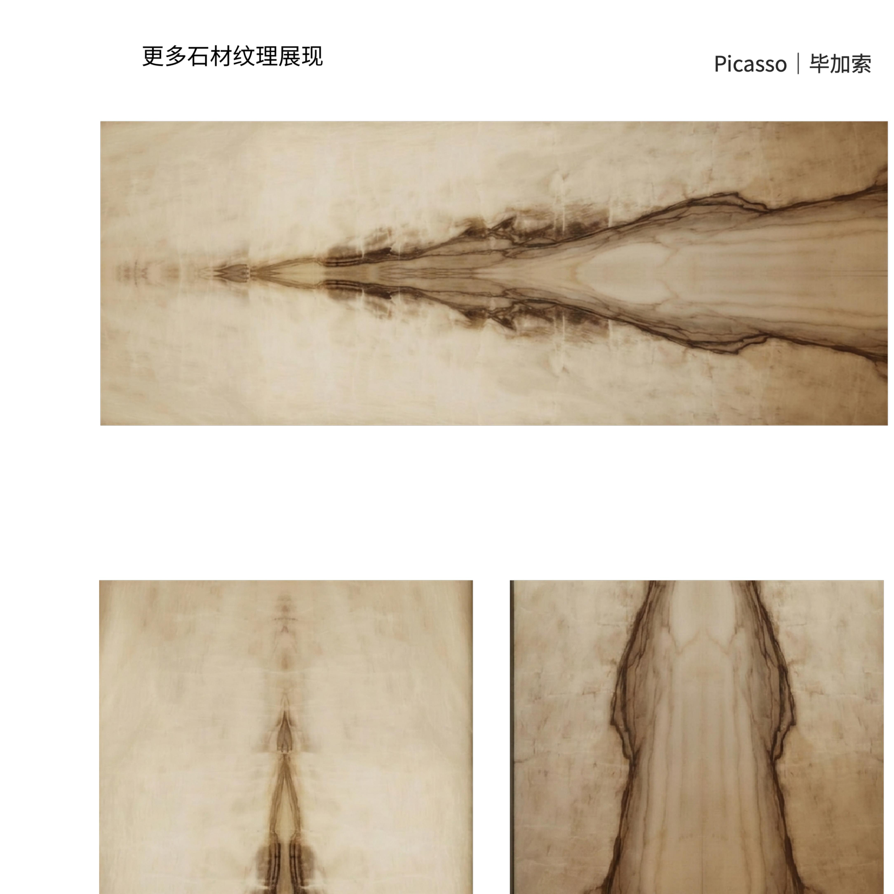
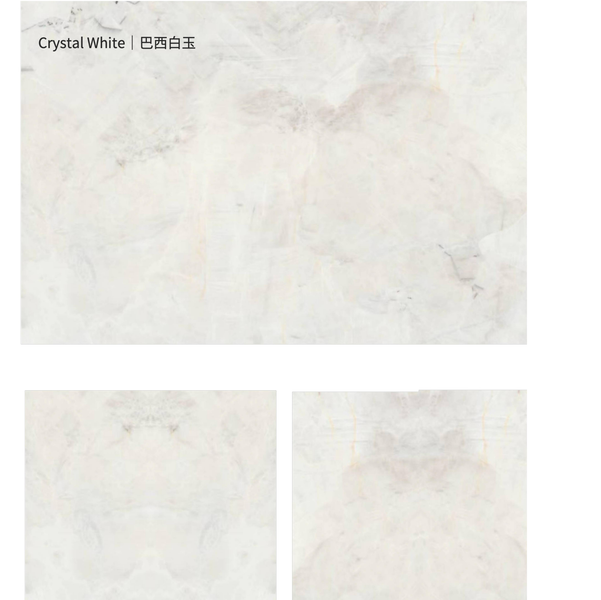
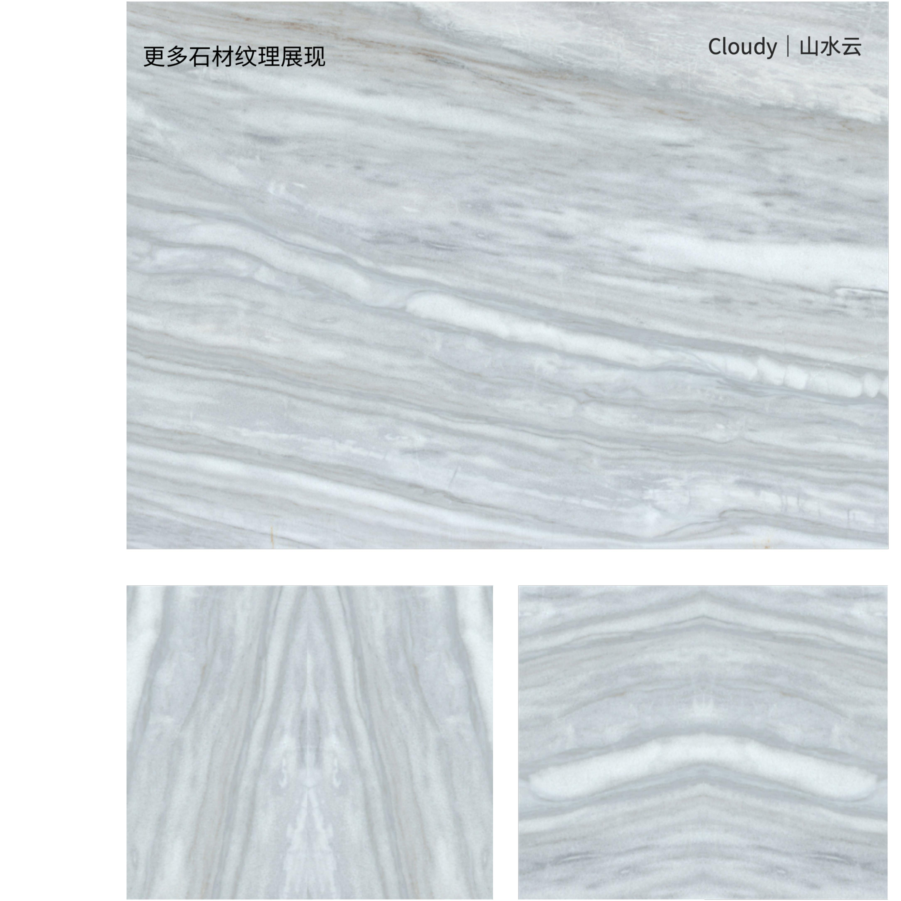
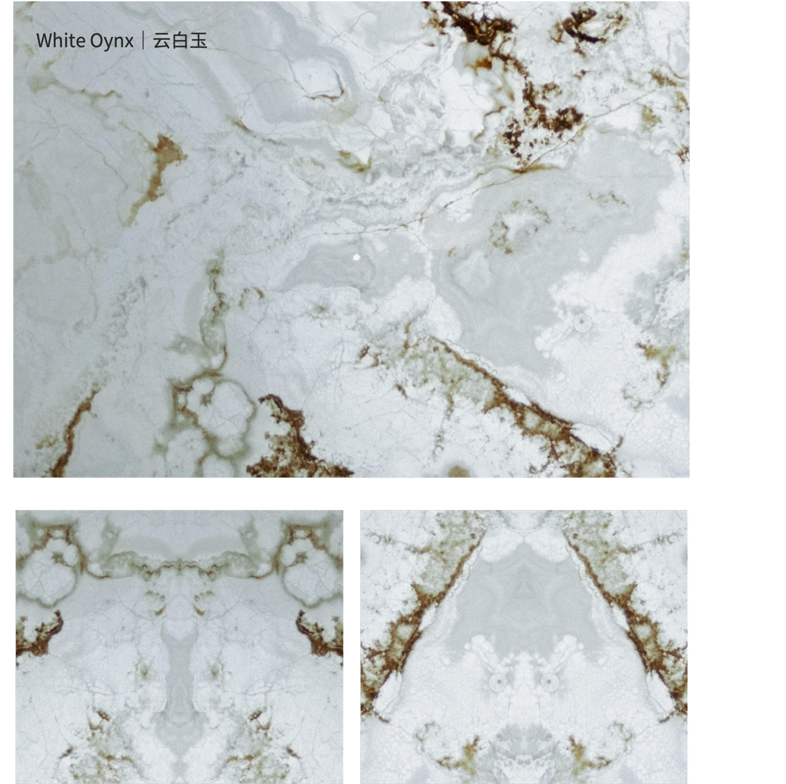
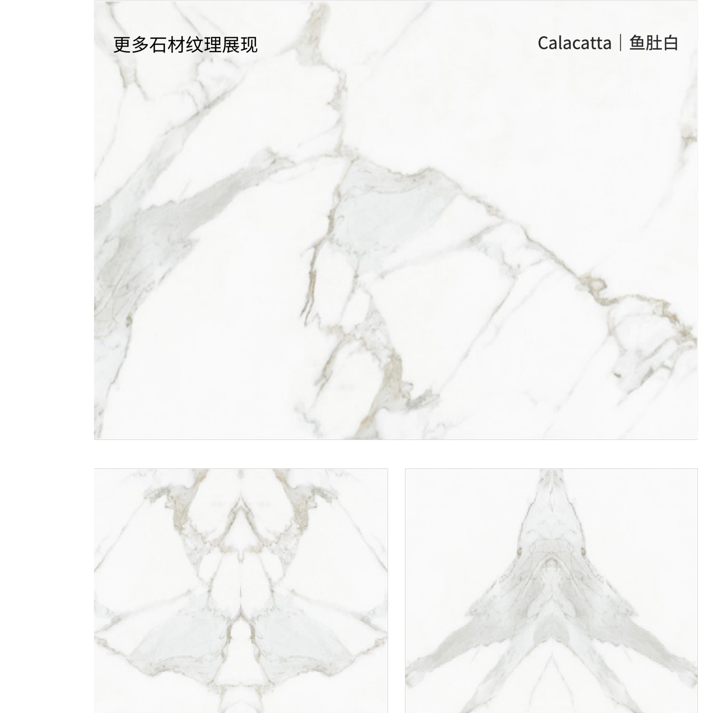
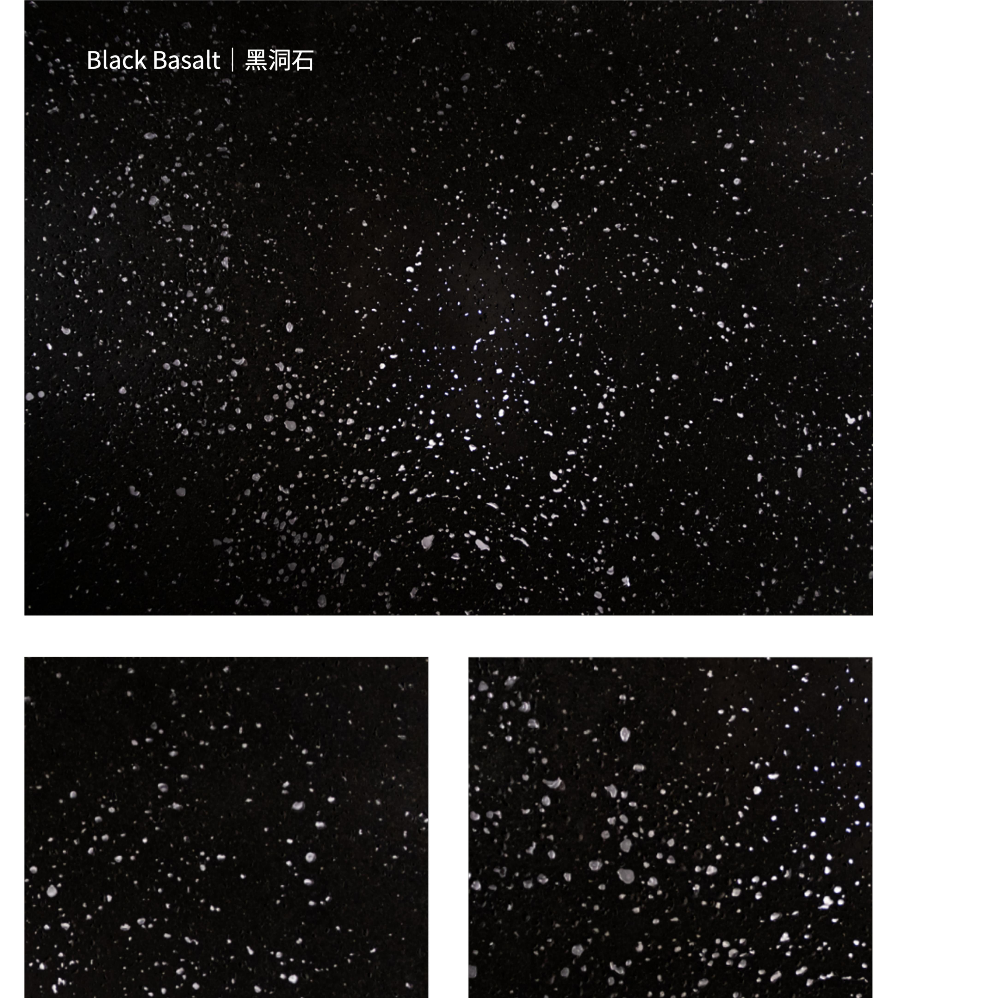
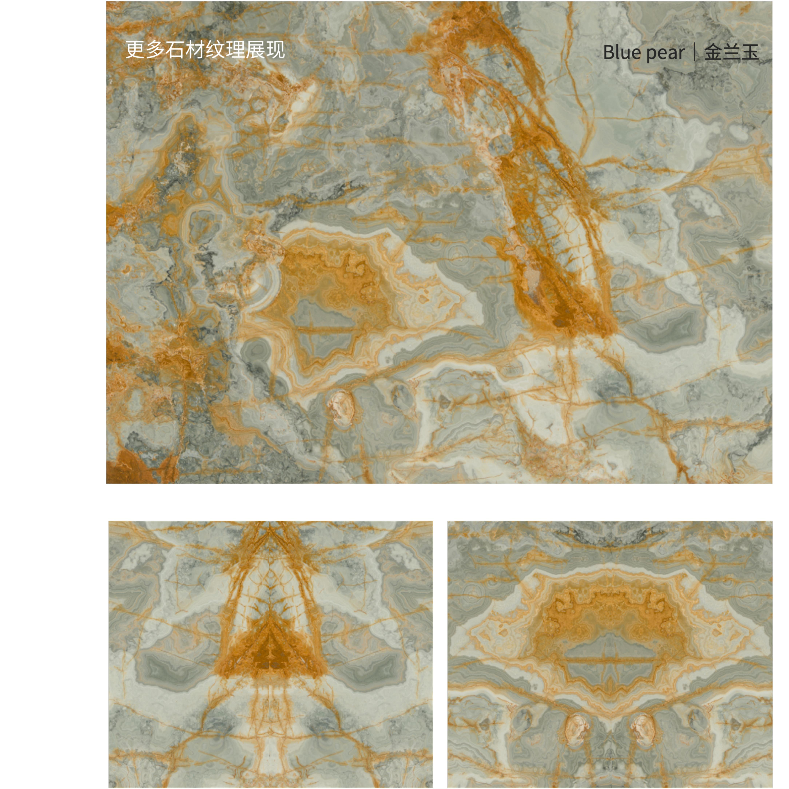
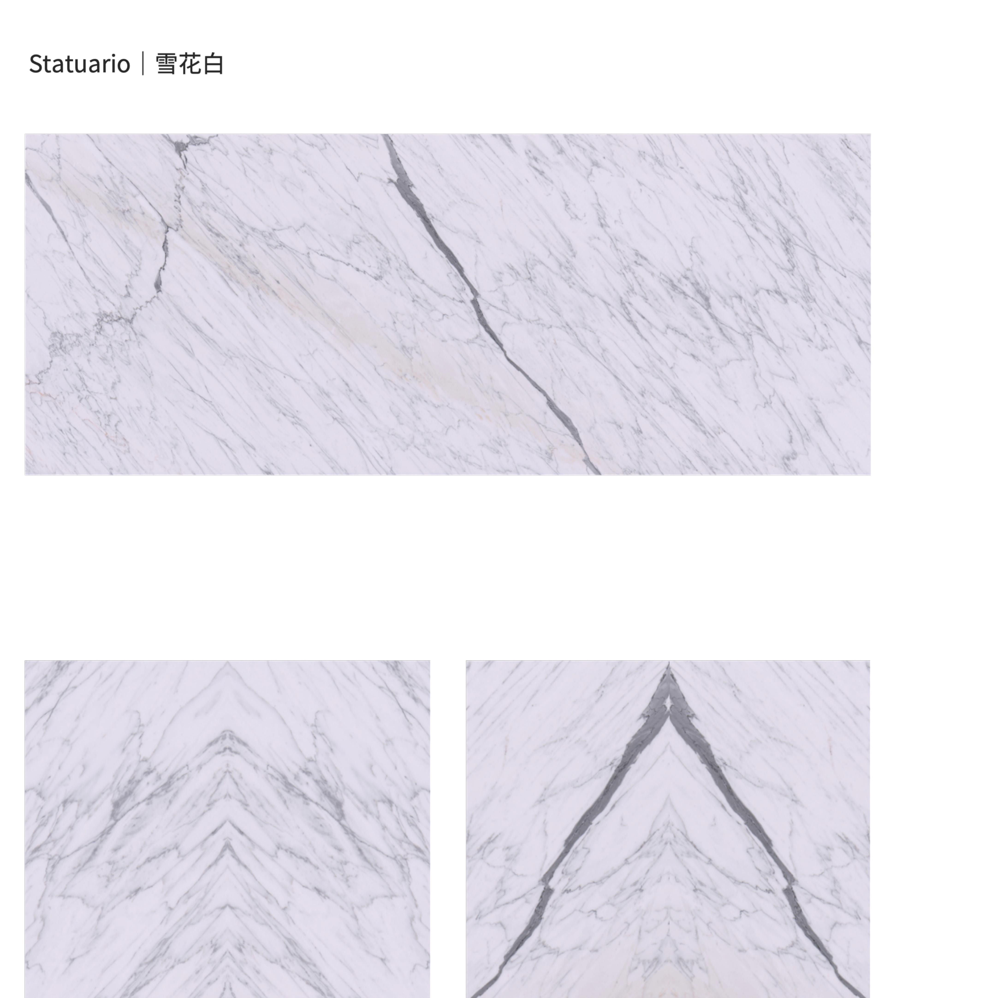

Through Clarity, Beyond Boundaries.

Glass | PVB | Stone | PVB | Glass — a five-layer laminate. Patented hot-fusion breaks the translucency barrier of natural stone; 3mm ultra-thin slicing releases the stone's translucency while enhancing UV blocking and safety.
| Structure | Glass | PVB | Stone | PVB | Glass (GSG) |
|---|---|
| Stone | Natural stone sliced to 3mm |
| Backlighting | LED diffuser, 24V, 2700–6500K tunable |
| Dimensions | Project-based customisation; samples & mock-ups available |
Eight natural-stone textures, presented in the exact sequence of the approved source boards.








Send us your project stage, space type and intended application — we respond with samples, drawings and engineering advice.